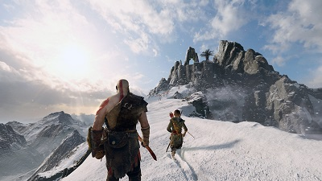
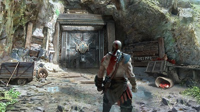
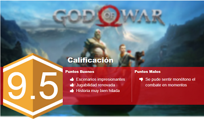

RESEÑA - GOD OF WAR
Después de un letargo notable y de señas que apuntaban a que la franquicia ya estaba dando sus últimos alientos de relevancia en el medio, God of War vuelve con bombo y platillo mostrándonos que; por más que la fórmula se sentía agotada y sin ninguna virtud, siempre se puede, gracias a la magia de la ficción, reiniciar grandes historias tomando un concepto concebido y llevarlo a la gloria videojueguil.
Santa Monica estudio, liderados por la visión de Cory Barlog, han conseguido crear una de esas entregas, una de esas propuestas que después de 5 años de dedicación, pasión y esfuerzo, son abordadas con un enorme ánimo. Juegos que aunque parten de una base establecida y toman fórmulas jugables que pueden ser conocidas en la industria en general, aún así, sumando sus demás apartados consigue dotarnos un juego que cautiva desde sus primeros minutos.
Nuestro Fantasma de Esparta regresa pero años después y con una actitud totalmente diferente, se puede sentir que ha vivido muchas cosas, que ha visto eventos llenos de sangre e ira... ya nada lo sorprende. Ahora, carga una enorme barba y un hijo que le llama padre con cariño. El primer objetivo de esta futura aventura de las tierras más santas de Midgar, será ir a esparcir las cenizas de la mujer de Kratos y la madre de su hijo, Atreus. Partiendo de este punto, es que se toparán con una aventura mucha más compleja que ésta premisa.

Hay un punto que tiene que dejarse aclarado desde un principio, God of War no es un juego corto, una experiencia pasajera que se consigue conquistar en unas cuantas horas, no, este nuevo God of War respeta a los jugadores dándoles una campaña digna para una entrega semilineal como lo puede ser ésta. Y cosa curiosa, porque aunque no les guste cómo es que suena la palabra “semilineal” para describir al juego, los anteriores juegos de la franquicia eran totalmente lineales, y en este caso, ahora podremos ver diferentes mundo en los que podemos regresarnos sobre nuestros pasos cual Metroidvania, y poder tener la posibilidad de irnos por una misión u otra, cosa que le permite meter elementos como RPG occidental: cuidar armaduras, niveles que potencialicen ciertas habilidades de combate, y demás agregados. Y claro, cambiar el sistema de combates a algo un poco más cuidadoso, en el que, cual Assassin's Creed Origins, se le da prioridad al combate de espada y escudo, donde cuidar el tiempo de golpe y el tacto del parry o caunter se robará toda la importancia del juego.
Y ya como cambio sepultor para poder dar por declarado que God of War es destacable… eso es su nuevo rostro, el sistema gráfico que nos asombra no sólo por la calidad fotorealista que muestra su imagen, sino también por dar ese detalle de meter elementos cinematográficos en sus secuencias de cinemáticos, donde se siente que toda la acción es tan solo un plano secuencia muy largo que nos muestra en primer primerísimo plano, esta aventura de dioses y seres de fantasía nórdica.
Aunque no llega al nivel de otros juegos especialmente difíciles, dado al formato y el sistema de combate similar, como un Dark Soul lo podría ser por ejemplo, si que este viaje por tierras nórdicas no nos dejar ir con mucha tranquilidad, otorgándonos momentos donde el juego nos gritará “insolentes” por no tener el nivel necesario para conquistar alguna misión. Lo cual solo enfatiza su carácter como pseudo RPG.

Si algo se le puede achacar en contra al juego, eso es lo monótono que llega a ser las batallas y los escenarios de batalla, y la mayor parte de la culpa de todo esto se debe a lo rimbombante que puede llegar a ser el juego con cuestión a su historia. God of War se siente que aunque sea un poco más amplio que sus predecesores, aun así siempre estamos ante la merced de un cinemático que nos quite el control, por lo que se puede entender como es que Santa Monica studio se enfocó más en la narrativa, que darle más seriedad técnica al sistema de combate.
Sin embargo, eso no demerita el esfuerzo y la calidad con la que se nos presenta esta propuesta, que aunque no sea perfecta, tiene grandes oportunidades de hacerse un precedente para una experiencia del tipo, y eso, a veces es más importante que tener un 10 perfecto en Metacritic.
